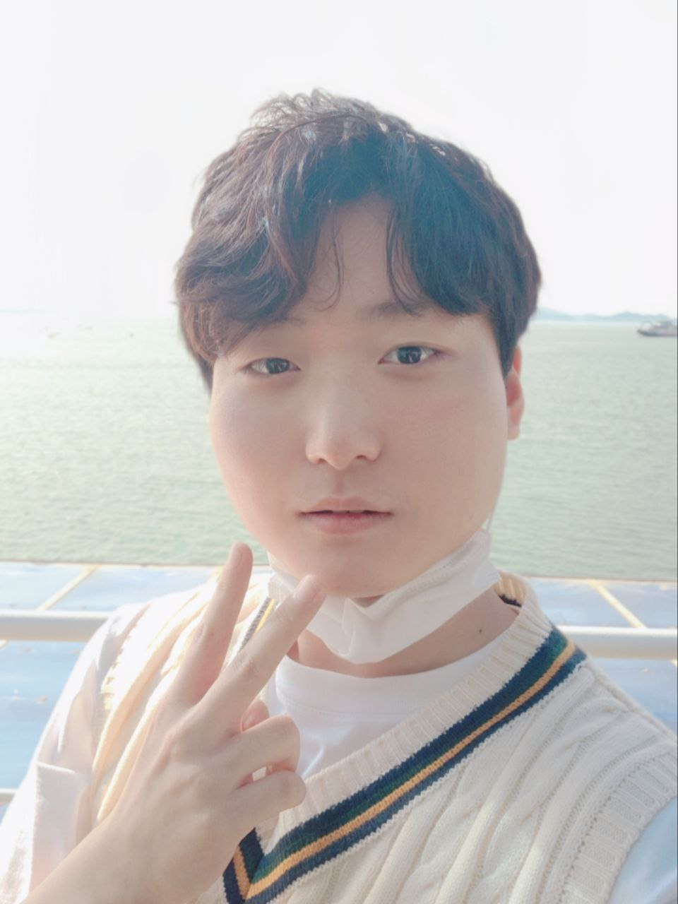

ABOUT ME
FULL NAME: 김희준
E-MAIL: heej1998@gmail.com
BLOG: Github 주소
저는 학창시절부터 떠오르는 아이디어들을 바탕으로 더 편리하게 할 수 있는 방법을 고민하곤 했습니다. 그러나 지식과 기술이 부족하여 이러한 기능들을 구현하는 데 한계를 느꼈습니다. 이러한 한계를 극복하기 위해 프로그램 관련 카페에 가입해 조언을 구하고, 서점에서 어플리케이션 개발 관련 책을 구매하며 개발 분야에 깊은 관심을 가지게 되었습니다. 누구에게나 도움이 되는 앱을 만들기 위해 꾸준히 노력했습니다.
MY INTERESTS
프로그래밍
UX/UI 디자인
팀 프로젝트
AI 및 데이터 분석
게임 개발